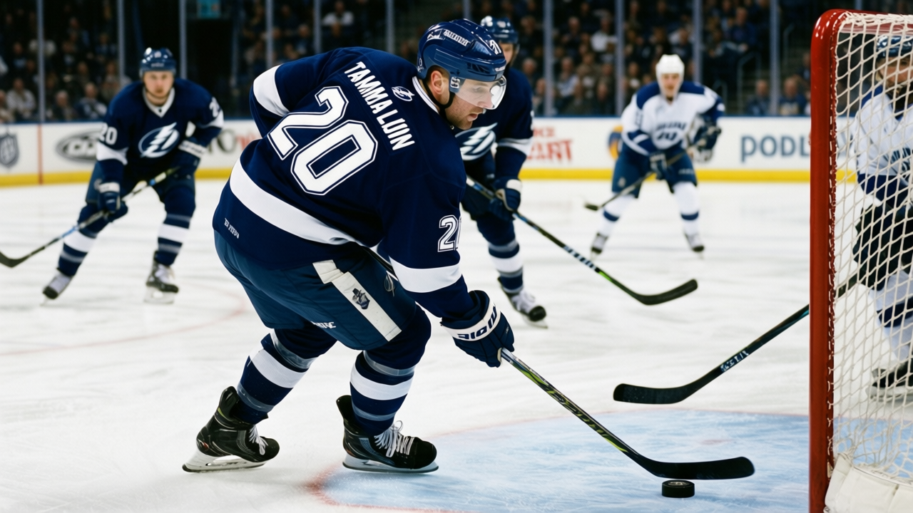

The Lightning have 21 wins and nobody's watching: a team at 53 points with no 90
Tampa Bay is tied with Carolina at the top of the Southeast, spends $0.86M per point, and has no player graded above 86. The desk has been writing about the other team.
 Howard BlaineSenior writer, The Blaine Rankings · The Hockey Gazette
Howard BlaineSenior writer, The Blaine Rankings · The Hockey Gazette
The piece
 Tampa Bay Lightning has won five straight, 21 victories in 39 games, the second-highest win total in the Eastern Conference behind only Toronto's 30. It is 13-8 on the road. It spends $0.86M per point, third-cheapest in the league behind Vancouver and Edmonton. And by any measure the Bureau publishes, it is the best team in the league that has never had a single player graded above 86.
Tampa Bay Lightning has won five straight, 21 victories in 39 games, the second-highest win total in the Eastern Conference behind only Toronto's 30. It is 13-8 on the road. It spends $0.86M per point, third-cheapest in the league behind Vancouver and Edmonton. And by any measure the Bureau publishes, it is the best team in the league that has never had a single player graded above 86.
The Book has  Nikolai Khabibulin90 at 86, the highest grade on the roster.
Nikolai Khabibulin90 at 86, the highest grade on the roster.  Vincent Lecavalier88 sits at 84 with 76 points through 39 games and a 160-point pace.
Vincent Lecavalier88 sits at 84 with 76 points through 39 games and a 160-point pace.  Martin St. Louis85, 33 and undrafted, has 65 points at 22.8 minutes a night.
Martin St. Louis85, 33 and undrafted, has 65 points at 22.8 minutes a night.  Cory Stillman82 has 62 points and 44 assists. Four men with the kind of production that puts a team at 53 points in a divisional race that
Cory Stillman82 has 62 points and 44 assists. Four men with the kind of production that puts a team at 53 points in a divisional race that  Carolina Hurricanes is also in at 53, and not one of them is a 90.
Carolina Hurricanes is also in at 53, and not one of them is a 90.
The Gazette ran a Carolina piece on December 28 about regulation losses and overtime points. The Hurricanes are 15-8-9. The Lightning are 21-11-3. Carolina has 12 points of goal differential across 39 games. Tampa Bay has 18. Both sit at 53. The Lightning win regulation games at a rate the differential does not capture, and the desk thinks that should count for more than the current conversation allows.
Khabibulin has 21 wins on a 3.14 goals-against average and a .856 save percentage. He was drafted in the seventh round, 204th overall, in 1992. Last season he won 38 games for Chicago on a 2.86 GAA. The Book has him at 86, which is 2 below last year's production and 1 below his base. He is 31. He has made 35 starts and the Lightning have won five straight with him in net, and they are doing it on a payroll of $45.79M.
Lecavalier is sixth in the league in scoring at 76 points.  Bill Guerin87 and
Bill Guerin87 and  Jaromir Jagr89 are tied at 84. Lecavalier is two behind
Jaromir Jagr89 are tied at 84. Lecavalier is two behind  Geoff Sanderson85 and five behind
Geoff Sanderson85 and five behind  Markus Naslund91. He is 24. His grade is 84. When the Hart vote comes it will likely go to a man with a 90 or higher, and Lecavalier will fall off the ballot on that threshold rather than on any shortage of production.
Markus Naslund91. He is 24. His grade is 84. When the Hart vote comes it will likely go to a man with a 90 or higher, and Lecavalier will fall off the ballot on that threshold rather than on any shortage of production.
The San Jose head coach Ron Wilson told The Tunnel's Jan Kowalczyk this week that Tampa is the kind of team that punishes a single bad shift: "They've got speed, they've got skill, and Khabibulin's been sharp. You let up for one shift against them and they punish you." That is an opponent's assessment of a team with no single player to game-plan around. Load up on Lecavalier and Stillman still has 44 assists. Crash the net and St. Louis still plays 22.8 minutes a night at 33. Try to outlast them and Khabibulin has still given 35 starts at a .856 save percentage.
The Lightning's revenue is $55.06M and their profit is $25.77M, both top-10 in the league. This is not a small-market or rebuilding story dressed up as one. They have built a durable core out of seven-round picks and undrafted free agents and a 1998 first-rounder who leads the team in scoring, and they are doing it on a payroll that is the fourth-lowest in the Eastern Conference.
The win streak is the longest currently running in the Southeast. The week ahead gives them Detroit on January 7 at home, Atlanta on January 9, and New Jersey on January 11. Three games to find out whether the five holds or goes further.
The standings at Christmas are the standings in April. Tampa Bay is 53 points on January 5. The Southeast is a race of two, and both halves of it are teams that nobody expected to be in it. The difference is that one of them has a story about overtime that the desk can write about. The other one just wins games, and the desk has not caught up to it yet.